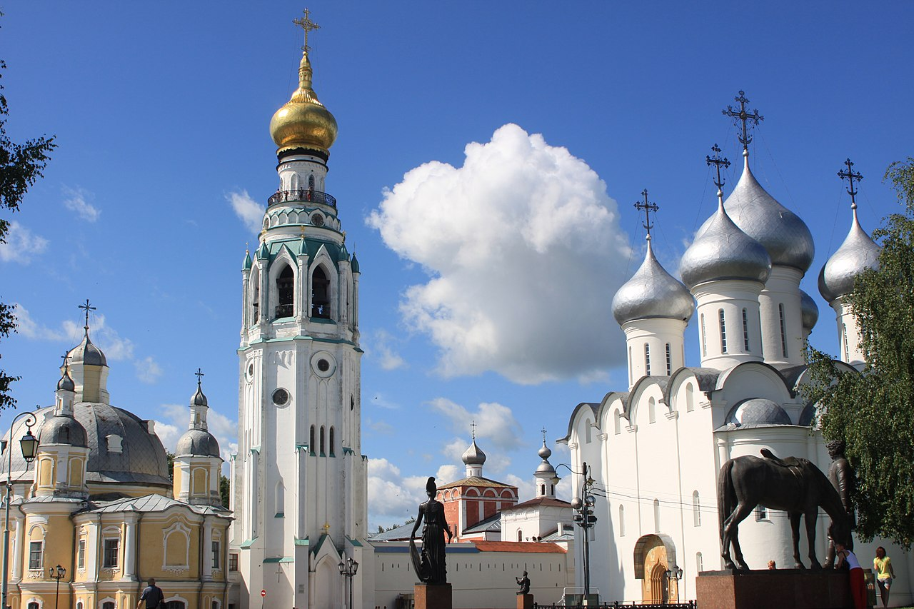
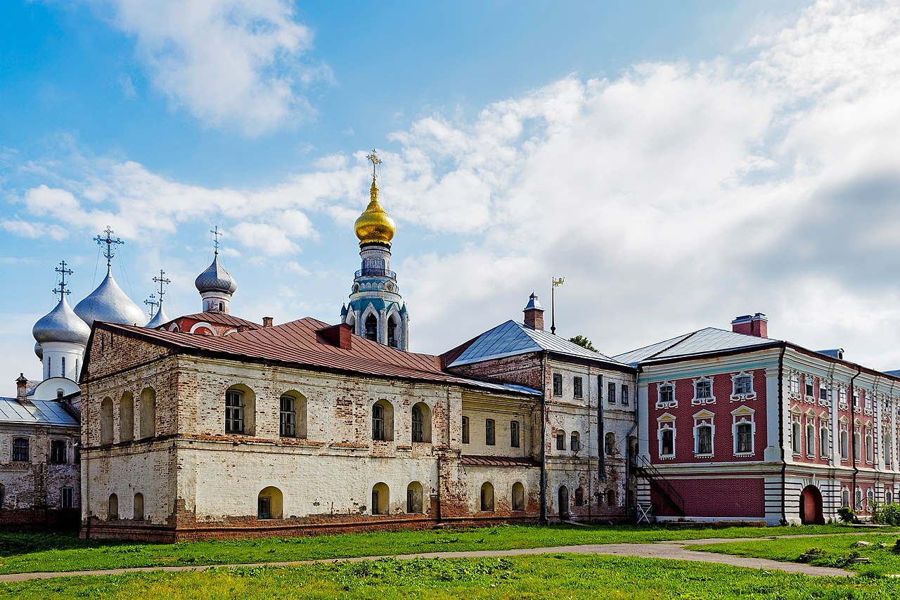
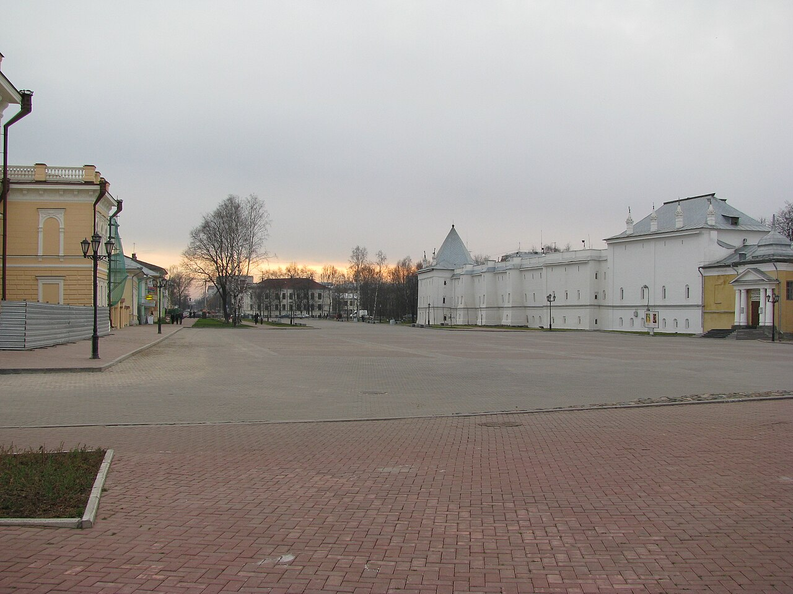
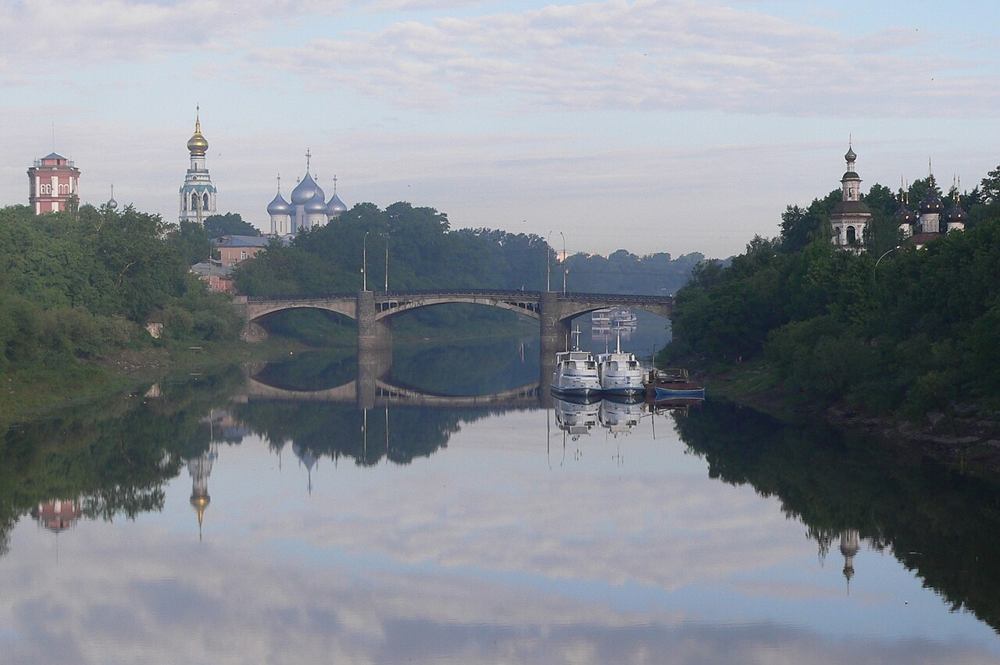
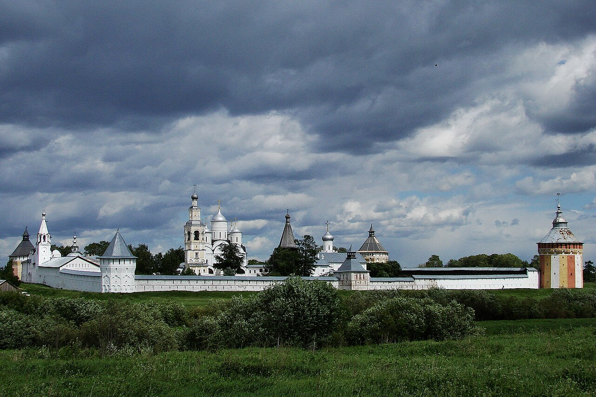
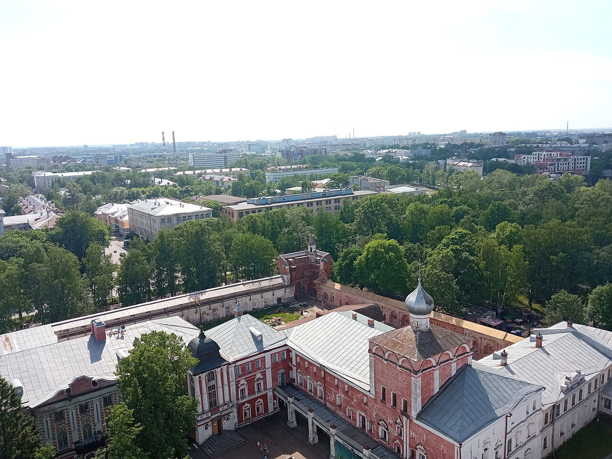
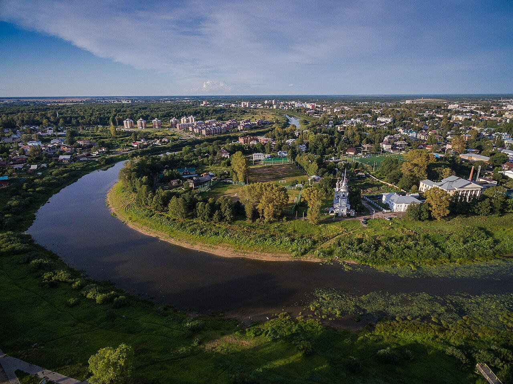

Исторические и справочные гербы


Vologda
Guide. Places in this edition: 10.
OTIUM is the practice of deliberate leisure. In the classical sense, otium is not escape from work but time when attention returns to memory, landscape, and thought — without a utilitarian deadline.
We shape routes for lingering, not for checklist tourism. The goal is presence in a place rather than consumption of sights.
OTIUM is not a tour operator. It is an invitation to walk, pause, and leave a route unfinished if the light on a façade deserves another minute.
Исторические и справочные гербы
Guide. Places in this edition: 10.
Вологда — административный центр Вологодской области, древний город на реке Вологде.
Торговые пути к Белому морю, каменное зодчество XVI–XVII веков и связь с патриархом Гермогеном и Софией Палеолог. Кремль, кружева деревянных домов и литературные традиции поддерживают образ «русского Севера».

Former Sobornaya Square inside the kremlin, framed by cathedral architecture and open paving.

Courtyard perspective of domes and walls showing the density of the kremlin churches.

Open square beside the kremlin used for events and as the main approach to the ensemble.
City museum dedicated to Vologda lace craft and regional textile heritage.
Baroque cathedral with a prominent bell tower near the kremlin square.

Landmark cathedral domes seen from the Vologda River, defining the city's northern skyline.

Major monastery complex north of the centre, with fortified walls and church buildings.
Fortified bishop's court with cathedral bell towers and kremlin walls at the historic core of Vologda.

Ground-level perspective of walls and churches within the kremlin precinct.

Riverfront with historic churches and mixed architecture along the water.